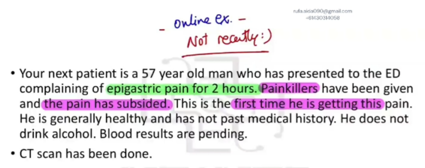
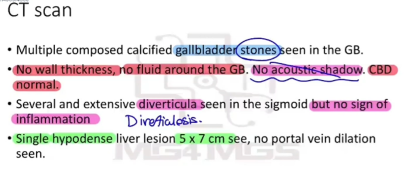

Source: Dr. Amir workshop — GIT 2026 / class 5 liver cases (Aug 2026 drop) · Specialty: gastroenterology
The patient presented to the emergency department with acute epigastric pain that has since settled with analgesia. Bloods and a CT scan have been done. Task: explain the results, diagnosis and differentials, and further investigations.
Opening: "How are you feeling now?" → "Much better, they gave me painkillers." "Can you tell me what has happened so far?" → "This weird pain started two hours ago, quite severe, so I came to ED. They did bloods and scans and gave me painkillers. I'm worried about what's happening."
Respond: "I understand your concern. I'm here to help. Let's go through the findings together and work out what's going on."
"We've done a scan of your abdomen. We checked your gallbladder - the sac behind your liver that helps digest food. We found a few stones in the gallbladder, but none of them are blocking the outlet or the tubes connecting it to the bowel, and there are no signs of inflammation of the gallbladder."
Reasoning (for the examiner): the wall thickness is normal and there is no pericholecystic fluid. Inflamed structures (diverticula, appendix, gallbladder) typically show surrounding fluid on imaging - so this indicates no cholecystitis and stones not lodged in the ducts.
"Looking at your liver, we found a lesion/lump measuring approximately 5 x 7 cm."
Terminology (for the examiner): it looks darker than surrounding tissue on CT, so we call it a hypodense lesion. There can be several possible causes, explained below.
"We also found some pouches in the wall of your bowel, which we call diverticula. These usually develop after long-standing constipation because of pressure on the bowel wall. This is definitely not the cause of your pain - I would expect diverticular pain in the lower abdomen, and the scan confirms they are not inflamed."
"First, to find the definite cause of the pain we need further investigations. Gallstones can cause acute, short-lived pain (biliary colic) that subsides by itself. Because there are no signs of gallbladder inflammation and the wall thickness is normal, gallstones are most likely NOT the cause of your pain."
"I am concerned about the lump in your liver. Based on its characteristics there is a possibility it could be a primary liver cancer or (importantly) a spread of cancer to the liver (metastasis). However, it could also be a benign lump - an adenoma, cyst, abscess or haemangioma - all still possible."
Differentials for the epigastric pain also considered: cholecystitis, cholangitis, hepatitis, pancreatitis, pancreatic cancer, peptic ulcer disease, lower lobe pneumonia, acute coronary syndrome.
For the liver lesion:
For possible metastasis: colonoscopy and endoscopy to check the bowel and stomach (bowel cancers can spread to the liver).
Other: pancreatic amylase and lipase (this could still be pancreatitis with an incidental liver lump); ESR, CRP, FBE; PSA in an older man.


Reviewed by: history-taking-expert (Australian clinical supervisor) · fact-checked against the irStudy medical textbook RAG index.